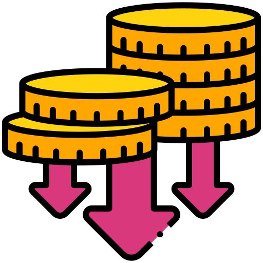

<!-- Проблема: Боль Малого Бизнеса -->
<section class="slide slide-problem">
  <div class="slide-content">
    <div class="problem-icons">
      <div class="problem-icon shake" id="icon-time">
        
        <span></span>
      </div>
      <div class="problem-icon shake" id="icon-error">
        
        <span></span>
      </div>
      <div class="problem-icon shake" id="icon-money">
        
        <span></span>
      </div>
    </div>
    <div class="problem-thesis">
      <h2>БОЛЬ МАЛОГО БИЗНЕСА</h2>
      <ul>
        <li><b>Ручной учет:</b> Медленно, Ошибочно, Дорого</li>
        <li><b>Последствия:</b> Штрафы <span class="danger">❌</span>, Потери времени <span class="warn">⏳</span>, Финансовые риски <span class="loss">💸</span></li>
      </ul>
      <blockquote>
        "Увеличение временных затрат и возможные финансовые потери"
      </blockquote>
    </div>
    <div class="mini-graph">
      <svg width="120" height="60">
        <polyline points="10,20 40,40 70,50 110,55" fill="none" stroke="#F97316" stroke-width="4"/>
        <polygon points="110,55 105,50 115,50" fill="#F97316"/>
      </svg>
      <span class="mini-graph-label">Падение эффективности</span>
    </div>
  </div>
</section>